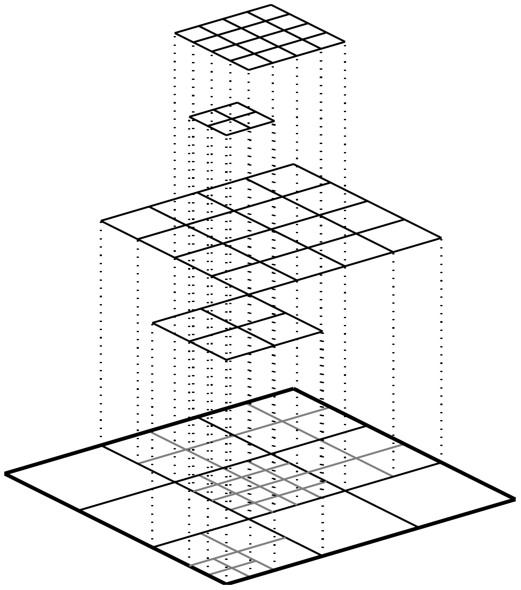
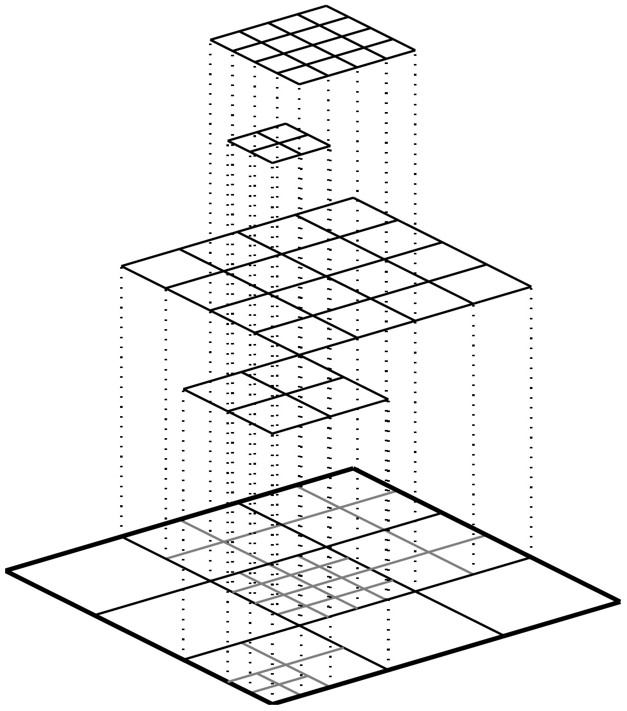
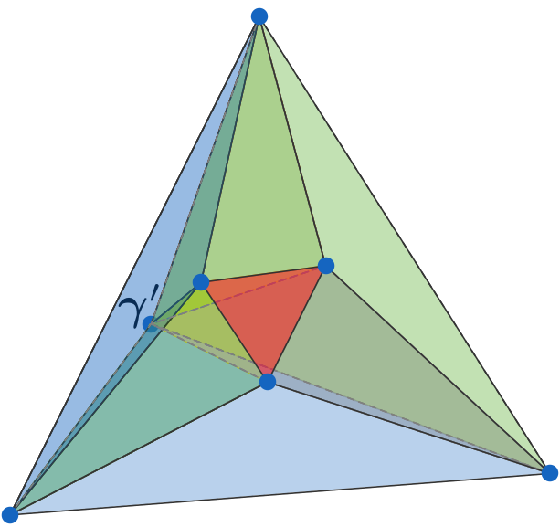
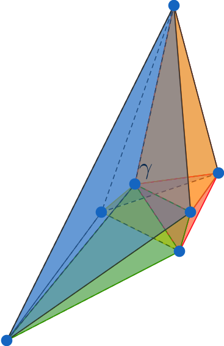
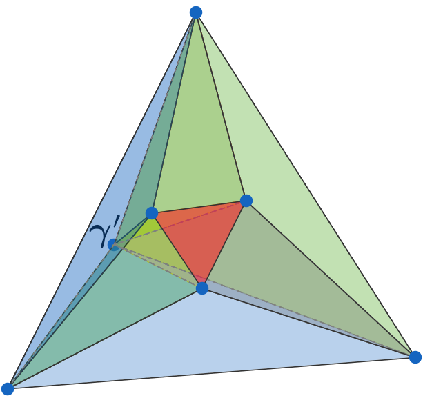
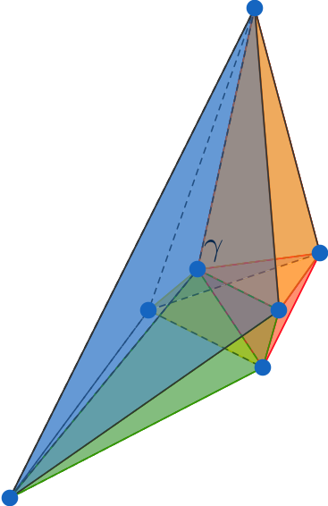
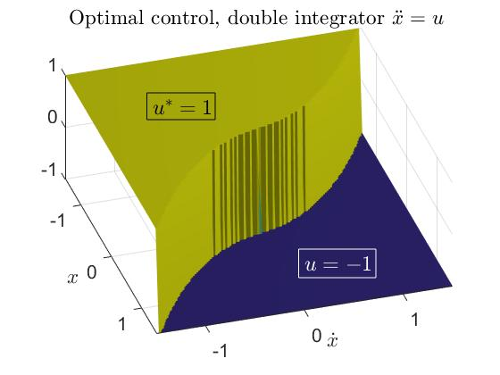

Algebraic Spline Geometry for Efficient Surface Representation and Data-driven Modelling
Dr. Nelly VillamizarDepartment of Mathematics, Swansea University
School of Mathematics, Cardiff University
December 9, 2021
Academic journey

Research Areas
- Effective methods to approximate data, computational shape design:
 Determine the most suitable partition of a domain to approximate a given dataset.
Determine the most suitable partition of a domain to approximate a given dataset.- Construct a set of generating functions with good approximation properties that allow deformation.
- Characterising spaces with local refinements properties, implementation and CAGD applications.
- Developing methods for surfaces with complex topology, applications to
fitting.
- Algorithmic construction of linkages following prescribed motions.
- Algebraic methods in optimal control.

Piecewise polynomial functions


Discretization: FEM to solve PDE's
 R. Courant (1949)
R. Courant (1949)
 O. Zienkiewicz (1921-2009)
O. Zienkiewicz (1921-2009)

 Courant element

Courant element


 Loop subdivision
Loop subdivision

Computer Graphics CAGD CAD/CAM

Isogeometric Analysis= CAGD + FEM
Hughes, Cottrell, and Bazilevs (2005)Higher dimensional splines
E. Postinghel, F. Sottile, and N. Villamizar 📑 Degenerations of toric varieties (2015)


 A pair of polynomials $(f,g)$ is $C^r$-continuous across a common face iff \[f - g = \ell^{r+1} h \Leftrightarrow f-g\in \langle \ell^{r+1}\rangle \]
Strang (1973) Billera (1988)
A pair of polynomials $(f,g)$ is $C^r$-continuous across a common face iff \[f - g = \ell^{r+1} h \Leftrightarrow f-g\in \langle \ell^{r+1}\rangle \]
Strang (1973) Billera (1988)
Dimension of spline spaces
B. Mourrain and N. Villamizar 📑 Homological techniques for the analysis of the dimension of spline spaces (2013) 📑 Dimension of spline spaces on tetrahedral partitions (2014) 📑 Spline spaces on triangulations (2014)

Hierarchical box splines
 Yvar et al. 2005.
Yvar et al. 2005.


N. Villamizar, A. Mantzaflaris, and B. Jüttler 📑 Characterization of hierarchical quartic box splines on a three-directional grid, Computer Aided Geometric Design, 41, 47-61, 2016. 📑 Completeness characterization of type-I box splines [arXiv:2011.01919] Springer INdAM Series, 2021. D. Toshniwal and N. Villamizar 📑 Dimension of polynomial splines of mixed smoothness on T-meshes [arXiv:1912.13118], Computer Aided Geometric Design, 80, pp. 101880, 2020.
Splines and tensor decomposition
\[\ell=a x+b y+c z\; \longleftrightarrow \; P = [a :b:c]\in \mathbb{P}^ 2 \]
$\langle \ell_1^{r+1}, \cdots, \ell_m^{r+1}\rangle_d \;\longleftrightarrow \wp_1^{d-r}\cap\cdots\cap\wp_m^{d-r}\quad$


M. Gallet, K. Ranestad, and N. Villamizar 📑 Varieties of apolar subschemes of toric surfaces [arXiv:1601.00694] Arkiv för Matematik, 56 (1), pp. 73-99, 2018.
Dimension of trivariate splines


 



M. DiPasquale and N. Villamizar 📑 A lower bound for splines on tetrahedral vertex stars [arXiv:2005.13043] SIAM Journal on Applied Algebraic Geometry, 5(2), pp. 250-277, 2021. 📑 A lower bound for tetrahedral splines in large degree [arXiv:2007.12274], 2021.
Lower bound = generic dimension
| $r$ | $d$ | $\binom{d+3}{3}$ | BB | NewBound | $\dim$ |
|---|---|---|---|---|---|
| 2 | 4 | 35 | 35 | 35 | 24 |
| 2 | 5 | 56 | 93 | 96 | 96 |
| 2 | 6 | 84 | 237 | 240 | 240 |
| 3 | 6 | 84 | 84 | 60 | 84 |
| 3 | 8 | 165 | 351 | 380 | 380 |
| 3 | 9 | 220 | 663 | 696 | 696 |
| $r$ | $d$ | $\binom{d+3}{3}$ | MV | NewBound | $\dim$ |
|---|---|---|---|---|---|
| 2 | 8 | 165 | 165 | 79 | 165 |
| 2 | 9 | 220 | 220 | 268 | 268 |
| 2 | 10 | 286 | 352 | 586 | 586 |
| 3 | 11 | 364 | 364 | 148 | 364 |
| 3 | 12 | 455 | 455 | 425 | 455 |
| 3 | 13 | 560 | 560 | 856 | 856 |
Complex shape representation

A. Blidia, B. Mourrain, R. Vidunas, and N. Villamizar 📑 Dimension and bases for splines on surfaces of arbitrary topology [arXiv:1509.03274] CAGD, 45, 108-133, 2016. 📑 $G^1$-splines on quad meshes with 4-split macro-patch elements [arXiv:1703.06717] CAGD, 52-53, pp. 106-125, 2017. N. Villamizar, and B. Yuan 📑 Sheaf structure of geometrically continuous splines, 2022.


Rigidity and linkages
M. Gallet, C. Koutschan, Z. Li, G. Regensburger, J. Schicho, and N. Villamizar 📑 Planar linkages following a prescribed motion [arXiv:1502.05623] Mathematics of Computation, 86, 473-506, 2017.
M. Gallet, C. Koutschan, Z. Li, G. Regensburger, J. Schicho, and N. Villamizar 📑 Planar linkages following a prescribed motion [arXiv:1502.05623] Mathematics of Computation, 86, 473-506, 2017.
Algebraic methods in optimal control
- Fundamental challenges in dynamic optimization such as pole placement, optimality conditions for model predictive control, and the parametrization of switching surfaces, can be cast as a system of algebraic equations.
- The aim is to develop effective methods to analyse polynomial systems by combining
- Efficient iterative methods in optimization
- Gröbner bases
- Sturm sequences.
Accurate identification of switching curves

Improved optimal trajectories are obtained by studying the solvability of the polynomial system associated to the optimality conditions.
For $A,Q\in\mathbb{R}^{n\times n}\,,B\in \mathbb{R}^{n\times m}\,, R\in\mathbb{R}^{m\times m}$ solve for $X\in\mathbb{R}^{n\times n}$ : \[A^tX+X A-X BR^{-1}B^tX+Q=0\] Optimal feedback control: $u^*(x):=-(R^{-1}B^t X)x$ .
D. Kalise, B. Rybolowicz, and N. Villamizar 📑 Chattering-free quasi time optimal control (in preparation).
Splines in data science

Splines in machine learning
- approximation theory,
- optimization.
- geometric modelling,
- computer vision.
Examples for spatial aggregation in geometric deep learning with trainable, continuous kernel functions, showing methods for (a) image graph representations and (b) meshes.
SplineCNN: Fast Geometric Deep Learning with Continuous B-Spline Kernels, M. Fey, J. Lenssen, F. Weichert, H. Müller, 2018, IEEE-CVF Conference on Computer Vision and Pattern Recognition. Spline parameterization of neural network controls for deep learning, S. Günther, Will Pazner, D. Qi [arXiv:2103.00301], 2021.MSc Project: benchmarking splines and deep learning
Goal: a theoretical and numerical comparison of splines and deep learning in 2D/3D problems. Study case: topography reconstruction. Benchmark: accuracy, storage, data efficiency. Project structure: 1) Learning topographic data structures (DEM, SRTM). 2) B-splines reconstruction. 3) Deep learning surface recovery: architectures, training. 4) Training, validation, and benchmarking from idealized and real-world topography datasets.
Locally refined spline surfaces for representation of terrain data, V. Skytt, O. Barrowclough, T. Dokken, Computers & Graphics, 2015. GeoAI: Where machine learning and big data converge in GIScience, W. Li, Journal of Spatial Information Science, 2020.
Future directions
- High order methods for computational engineering and data analysis British Council & French Embassy in UK Alliance Hubert Curien programme (2021-23)
- Algebraic Spline Geometry: towards algorithmic shape representation Principal Investigator, EPSRC New Investigator award (2021-24)
- Effective algebraic methods in optimal control.
- International TechneGroup industrial feedback, support, and CADfix training.
- EPSRC New Horizons Award, Engineering remit, collaborative project with the department of Naval Architecture, Ocean and Marine Engineering at Strathclyde University, UK.
- EPSRC+ NSF project in collaboration with Towson University, USA.
Thank you very much!!
Web: https://sites.google.com/site/nvillami